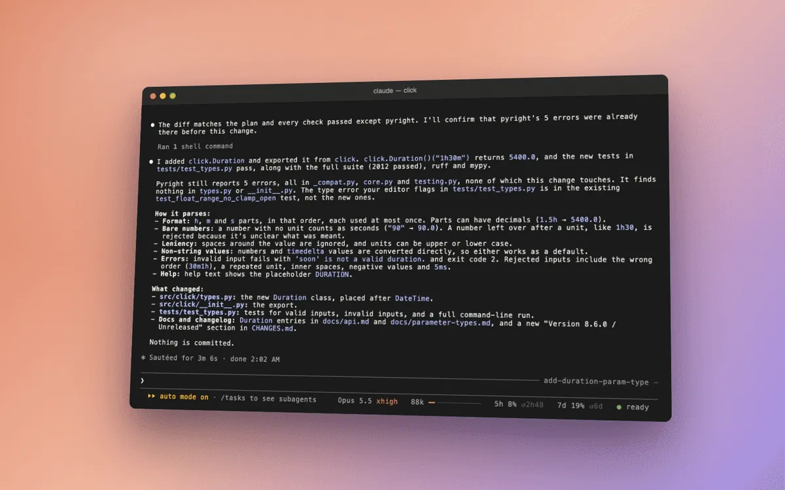

delegate
A cheaper model builds what you approved.
The moment
You plan a feature with Claude in plan mode, read the plan, and approve it.
Without delegate
Claude, the expensive model, builds it step by step, and in a long session each of those steps re-reads everything. A cheaper model could do the building, but Claude doesn’t hand work off by itself. In our runs it never did, 0 times in 1740 of 1740 of 174
174 runs
Opus 5.5, 13 Oct 2026, however we invited it.
With delegate
When you approve a plan of 20 lines or more, delegate tells Claude, in your name, to hand the building to a Sonnet worker. The worker builds in its own small context. Then delegate runs the checks itself and puts one line first: Verified, or Not verified with each reason. On Verified, Claude reports without running anything again.
Press play to follow one hand-off. Then choose “did not run” for the worker’s tests, and watch the verdict change.
- YouYou approve the plan
Twenty lines or more, so delegate gives the order: build it through a hand-off.
- ClaudeClaude hands it off
One step of its own: the plan becomes the worker’s task, with the project’s tests as the check.
hand_off({ kind: "build", task: "…the approved plan…" }) - WorkerA Sonnet worker builds it
Many small steps in its own small context, each far cheaper than one of Claude’s. It ends its report in a fixed form.
VERIFY tests: PYTHONPATH=src python -m pytest -q tests/test_duration.py open: none
- delegatedelegate checks the work itself
It runs the check, runs the worker’s new tests on their own, and reads the diff. Then it puts one line first.
Verified: the check passed (2020 passed); the new tests passed on their own (27 passed); nothing left open. If the diff is what you asked for, report to the person now: nothing is left to run.
Not verified: the new tests did not run (0 selected). Look at these before you report.
- ClaudeClaude reports
One more step: the answer. Nothing is left to run.Claude looks at what failed before it reports.
What we measured
A feature built this way cost 22% less22% cheaper, 95% range 11 to 33% cheaper22% cheaper
95% range 11 to 33% cheaper
4 per task (8 hand-offs in 8 runs across both tasks)
Opus 5.5, worker as delegate picks, 13 Oct 2026, and tests 26% less26% cheaper, 95% range 11 to 36% cheaper26% cheaper
95% range 11 to 36% cheaper
4 per task
Opus 5.5, worker as delegate picks, 13 Oct 2026, with results as good as Claude's own. Claude followed the order 8 times out of 88 of 88 of 8
8 runs
Opus 5.5, 13 Oct 2026.
Every measurement for delegate
The dot is the measured change, the bar around it the 95% range, the upright line no change. Left of the line is cheaper or fewer.
- An order from a mod to hand off a featureordered hand-off against the pack, Opus alone; worker costs corrected 16 Oct22% cheaper95% range 11 to 33% cheaper4 per task (8 hand-offs in 8 runs across both tasks). Opus 5.5, worker as delegate picks, 13 Oct 2026
- An order from a mod to hand off testsordered hand-off against the pack, Opus alone; worker costs corrected 16 Oct26% cheaper95% range 11 to 36% cheaper4 per task. Opus 5.5, worker as delegate picks, 13 Oct 2026
- An order in the person's name to hand off: followedhand-offs, of runs with the order8 of 88 runs. Opus 5.5, 13 Oct 2026
- The hand-off tool offered, nobody askinghand-offs, of runs0 of 2424 runs. Opus 5.5, 13 Oct 2026
- Every prompt ending with "Delegate where you see fit."hand-offs, of runs0 of 2828 runs (14 fresh, 14 long). Opus 5.5, 13 Oct 2026
- Claude Code's own Agent tool, available in every runuses, of runs0 of 174174 runs. Opus 5.5, 13 Oct 2026
- Measured again with 0.6.0's delegate, nobody askinghand-offs, of runs0 of 1616 runs. Opus 5.5, 15 Oct 2026
- The same tool framed as an ability, implement_spec: unused, and dearer to carrythe tool as implement_spec against the pack, Opus alone (feature)18% more expensive4 per task (0 hand-offs in 8 runs). Opus 5.5, 13 Oct 2026
- Handing off a feature in a 233k-token sessiontold to hand off against Opus alone with the pack; worker costs corrected 16 Oct35% cheaper2 per task and condition. Opus 5.5, 13 Oct 2026
- Handing off tests in a 233k-token sessiontold to hand off against Opus alone with the pack; worker costs corrected 16 Oct23% cheaper2 per task and condition. Opus 5.5, 13 Oct 2026
- Handing off a rename in a long sessiontold to hand off against Opus alone with the pack; worker costs corrected 16 Oct43% more expensive2 per task and condition. Opus 5.5, 13 Oct 2026
- Handing off an explanation in a long sessiontold to hand off against Opus alone with the pack; worker costs corrected 16 Oct103% more expensive2 per task and condition. Opus 5.5, 13 Oct 2026
- Handing off a lookup in a long sessiontold to hand off against Opus alone with the pack; worker costs corrected 16 Oct150% more expensive2 per task and condition. Opus 5.5, 13 Oct 2026
- Handing off a trace in a long sessiontold to hand off against Opus alone with the pack; worker costs corrected 16 Oct30% more expensive2 per task and condition. Opus 5.5, 13 Oct 2026
- Handing off a type search in a long sessiontold to hand off against Opus alone with the pack; worker costs corrected 16 Oct261% more expensive2 per task and condition. Opus 5.5, 13 Oct 2026
- Ordered to hand off a lookup, with read-only hand-offs offordered hand-off against the pack alone; worker costs corrected 16 Oct17 to 40% more expensive12 fresh runs. Opus 5.5, 13 Oct 2026
- A feature built by Haiku at low efforttold to hand off against the pack, Opus alone; worker costs corrected 16 Oct34% cheaper3 per task. Opus 5.5, worker Haiku 5.5 low, 13 Oct 2026
- A feature built by Sonnet at medium effort (the default)told to hand off against the pack, Opus alone; worker costs corrected 16 Oct26% cheaper3 per task. Opus 5.5, worker Sonnet 5.5 medium, 13 Oct 2026
- Tests written by Sonnet at medium efforttold to hand off against the pack, Opus alone; worker costs corrected 16 Oct35% cheaper3 per task. Opus 5.5, worker Sonnet 5.5 medium, 13 Oct 2026
- A small rename handed to Haiku at low efforttold to hand off against the pack, Opus alone; worker costs corrected 16 Oct37% more expensive3 per task. Opus 5.5, worker Haiku 5.5 low, 13 Oct 2026
- route 0.1 on the two tasks it routed (feature and tests)the pack with route against the pack; worker costs corrected 16 Oct33.8% cheaper95% range 27.4 to 39.4% cheaper4 per task. Opus 5.5, classifier ScaleDown, 15 Oct 2026
- Verified hand-off and handing off before reading, against route as releasedroute 0.3 (verified, direct) against route 0.1; worker costs corrected 16 Oct28% cheaper95% range 10 to 42% cheaper4 per task and condition. Opus 5.5, 15 Oct 2026
- Claude's own requests with the verified, direct hand-offroute 0.3 (verified, direct) against route 0.155% fewer steps95% range 36 to 68% fewer steps4 per task and condition. Opus 5.5, 15 Oct 2026
- A TypeScript feature routed to a Sonnet workerroute (Sonnet worker) against the pack alone, same batch; worker costs corrected 16 Oct51% cheaper4 per task and condition. Opus 5.5, worker Sonnet 5.5, 15 Oct 2026
- The same TypeScript feature: timeroute (Sonnet worker) against the pack alone, same batch42% less time4 per task and condition. Opus 5.5, worker Sonnet 5.5, 15 Oct 2026
- The same TypeScript feature: Claude's own requeststhe pack alone to route (Sonnet worker)11.0 to 2.04 per task and condition. Opus 5.5, worker Sonnet 5.5, 15 Oct 2026
- Writing TypeScript tests, routed to a Sonnet workerroute (Sonnet worker) against the pack alone, same batch; worker costs corrected 16 Oct36% cheaper4 per task and condition. Opus 5.5, worker Sonnet 5.5, 15 Oct 2026
- Writing TypeScript tests, routed to a Haiku workerroute (Haiku worker) against the pack alone, same batch; worker costs corrected 16 Oct46% cheaper4 per task and condition. Opus 5.5, worker Haiku 5.5, 15 Oct 2026
- A read hand-off checked place by place (PLACES), against Claude doing the lookup itselfread hand-off with PLACES against Claude alone; worker costs corrected 16 Oct5% more expensiveNot stated. Opus 5.5, 15 Oct 2026
Tried for delegate and dropped: Four ways to make Opus delegate, Handing off the small stuff, The projection that was wrong.
Where it doesn’t help
Small work costs more handed off: a hand-off takes a few steps of its own, and a lookup takes one. In a long session, a handed-off lookup cost two and a half times as much150% more expensive150% more expensive
No range in the source
2 per task and condition
Opus 5.5, 13 Oct 2026. So delegate gives the order only for an approved plan, and route only for features and tests.
Turn it on or off
/delegate lists every hand-off and what it cost. afterPlan: off stops the order. In the desktop app’s auto mode, plans aren’t handed off. Every option is in the README and SETUP.md; the code is in delegate/.
In a real session


Play the recording